The flight was good but my ears were popping really terribly. It might be because it's a smaller plane so the air pressure was a little weird.
Needless to say...THE DINNER WAS AMAZING!! I'm still thinking about the chicken and the squash pasta...
Day 12 (5/24) - Ferragamo & Bottega tour + Leather District
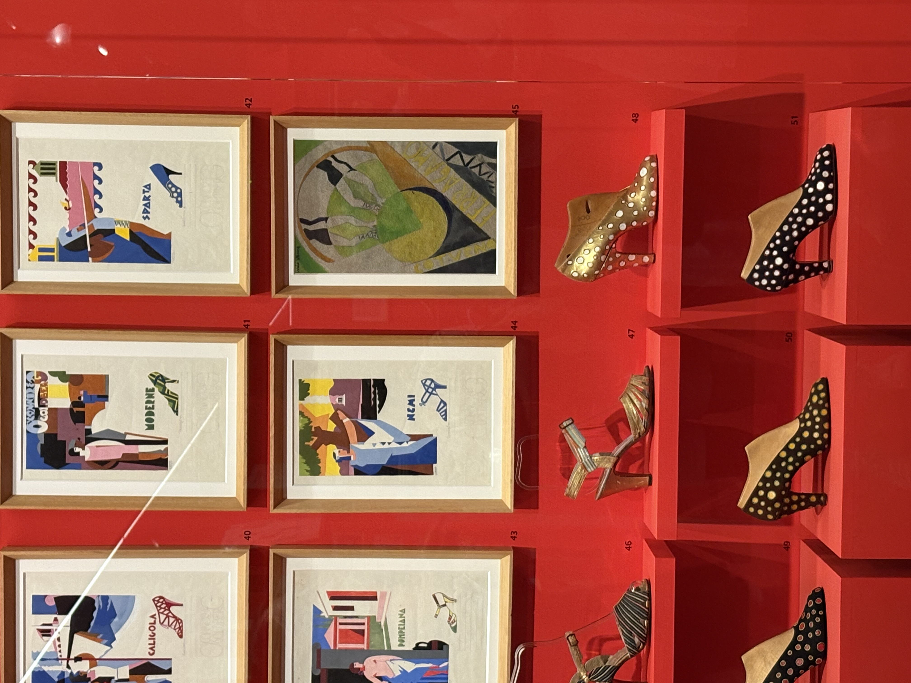
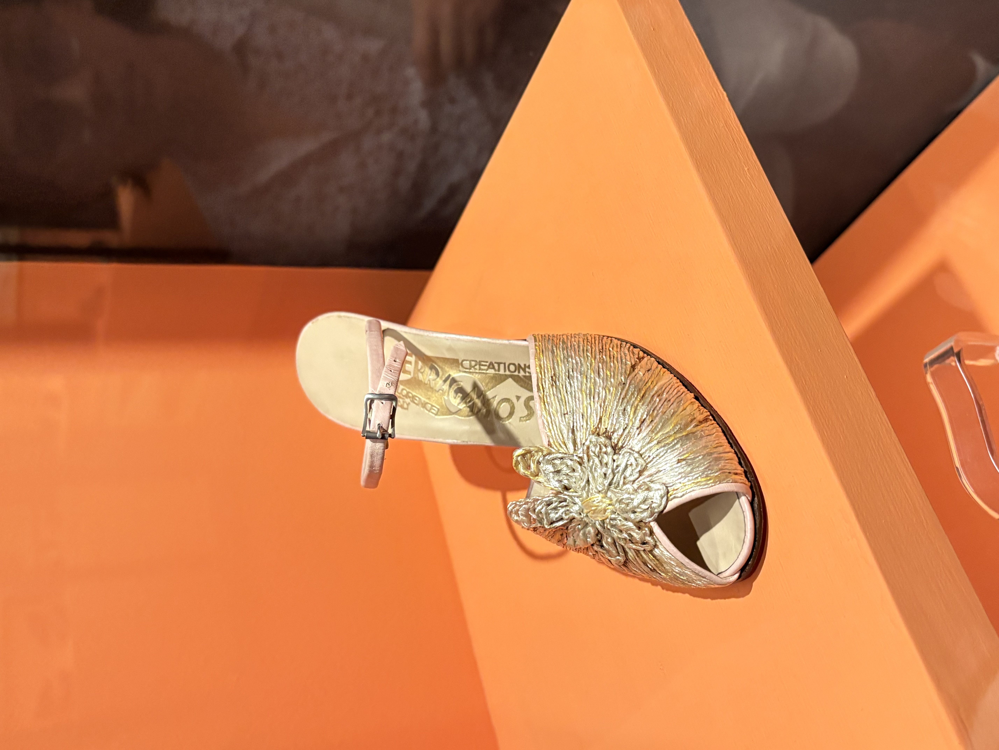
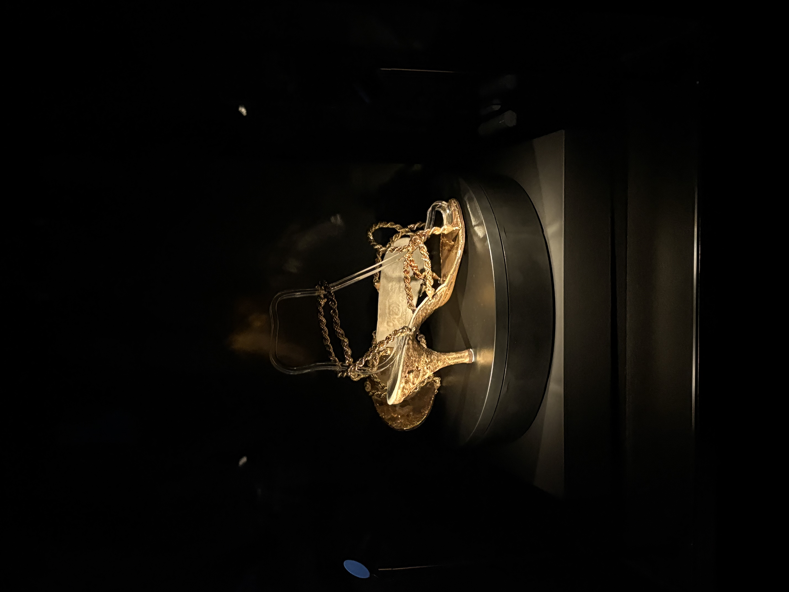
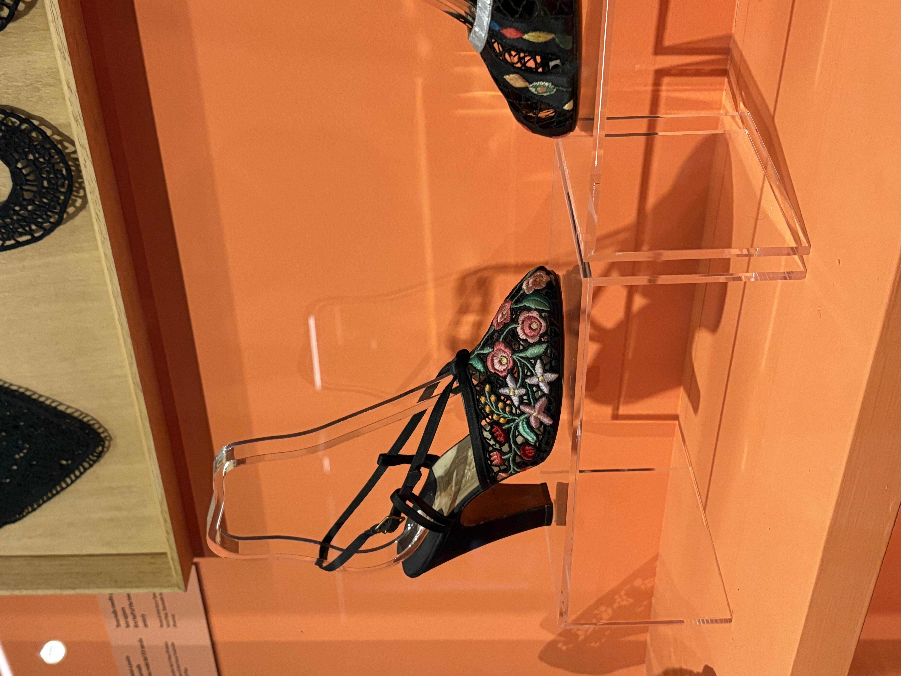
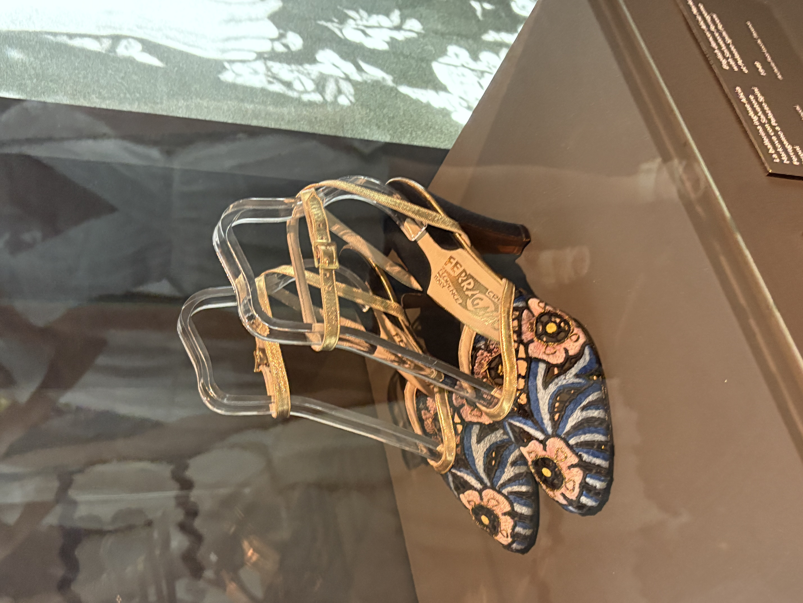
One of the best tours we've went on. Everytime I learn about the history of a luxury brand, I find myself more drawn to buying it in the future (except for Gucci, just not my vibe). The innovation of Ferragamo is really impressive, especially the experimentation with various materials -- from fishing lines to bird feathers to possin skin. Though I don't forsee myself buying a pair of shoes, I'll definitely buy one for my grandparents!
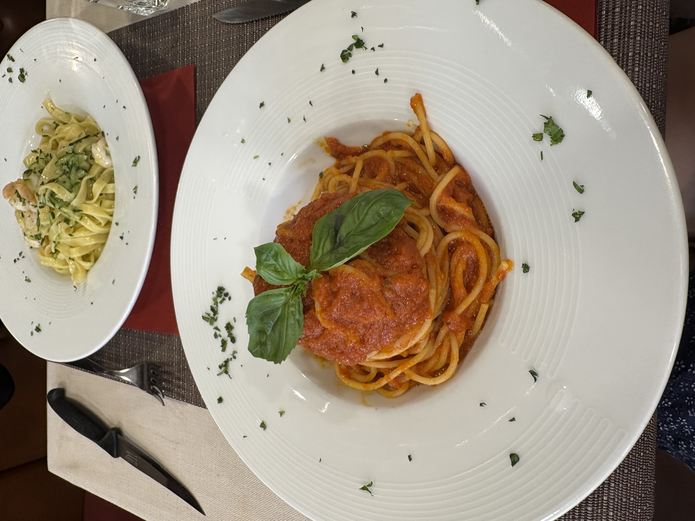
Exploring the leather district and speaking to the various owners was interesting. One conversation that stood out to me was the response the owner of Infinity leather had towards his reasoning of not using vegan leather. For him, it's yet another form of greenwashing in the corporate world since it's less durable and also require another layer of plastic to keep it together. I believe this topic doesn't have a definite answer, but with advancement of technology, real statistics might be able to answer the question.
Day 13 (5/25) - Free Day
Michelle's :D
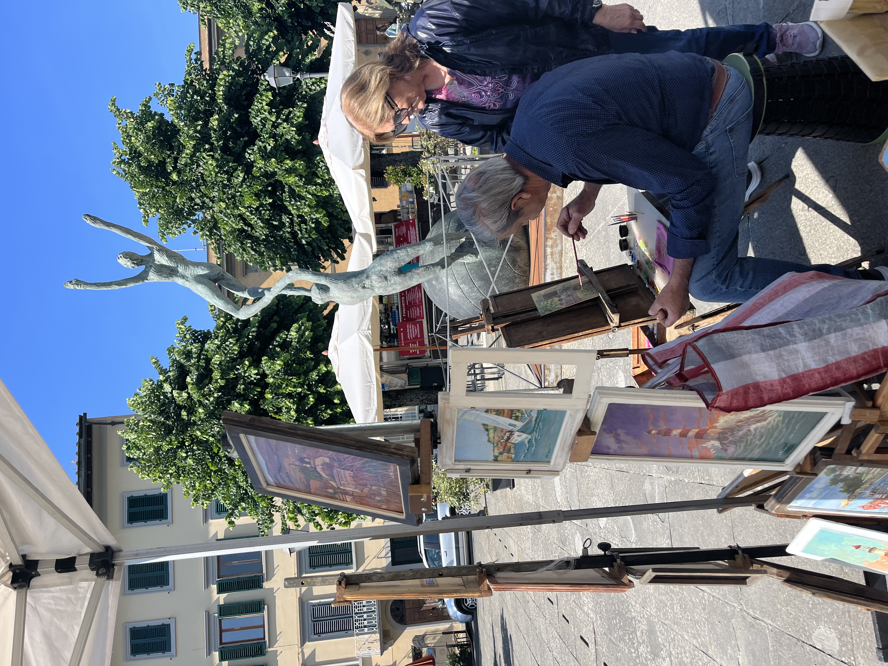
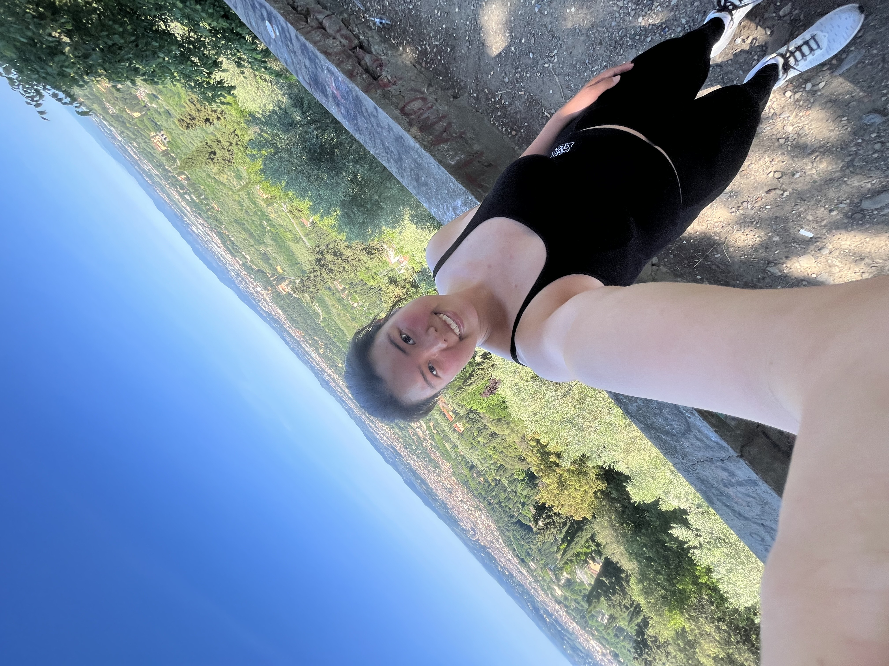
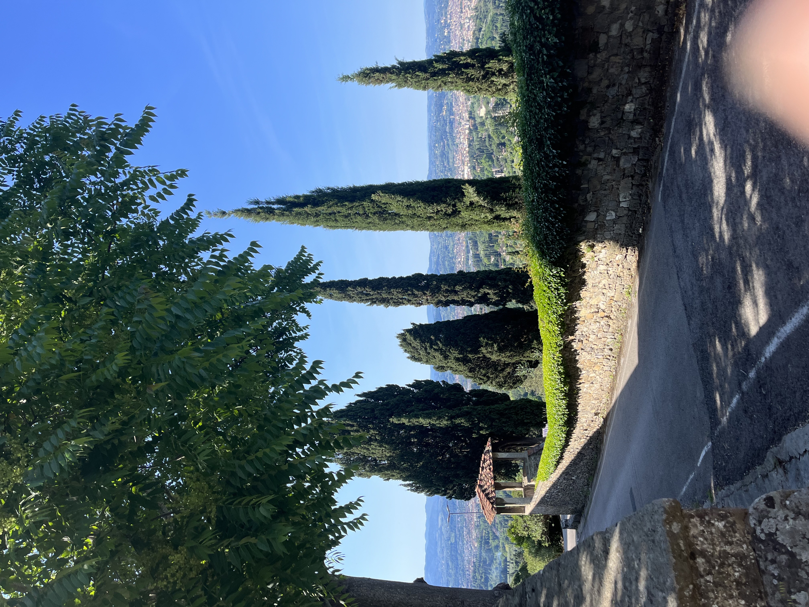
Some snipets of my Sunday -> Ran to Fiesole in the morning. It was a long hike but one of the most beautiful trails.
I think small towns are always my favorite, I bought a piece of artwork from this cute old couple and explored the area before running back.
Had the cutest brunch at Serre Torrigani in Piazzetta. (Well, before that, I accidentally walked 30 minutes to Serre Torrigani...)
In the afternoon, I went the flea market and embarked on a failed search of leather bag for my dad.
Great day :D
Alison's ❤
My weekend! I (Alison) went to the famous sandwhich shop with Sunny for breakfast (it was
lowkey underwhelming - I think my expectations were too high). Then we flea market
with Sunny and bought a bottle of truffle oil and handmade glass. For the rest of
the day we just wandered around I saw these cute fiat cars as well as the fake David
statue. I also finally bought my bottles of olive oil and balsamic vinegar (yummmm)
Overall a very chill day.
Day 15 (5/27) - Prato Day Trip + Cooking Class
Well...Jordyn and I (Michelle) got left behind on the train AHAHA but we had a good bonding time.
Prato is definitely a cute town, but stood out to me was Il Ganzo. I find it relatable that instead of trying to quickly expand his business, they've targeted towards more artisan markets and slowly branching into expansion across Italy. I find much more satisfaction talking to people and connecting rather than trying to earn as much money as possible when it's passion.
Cooking class was AMAZING!! I find it definitely one of the highlights of this trip. It's like messing around in the kitchen orderly and with good food. I'm definitely making the tiramisu when I go back home!


 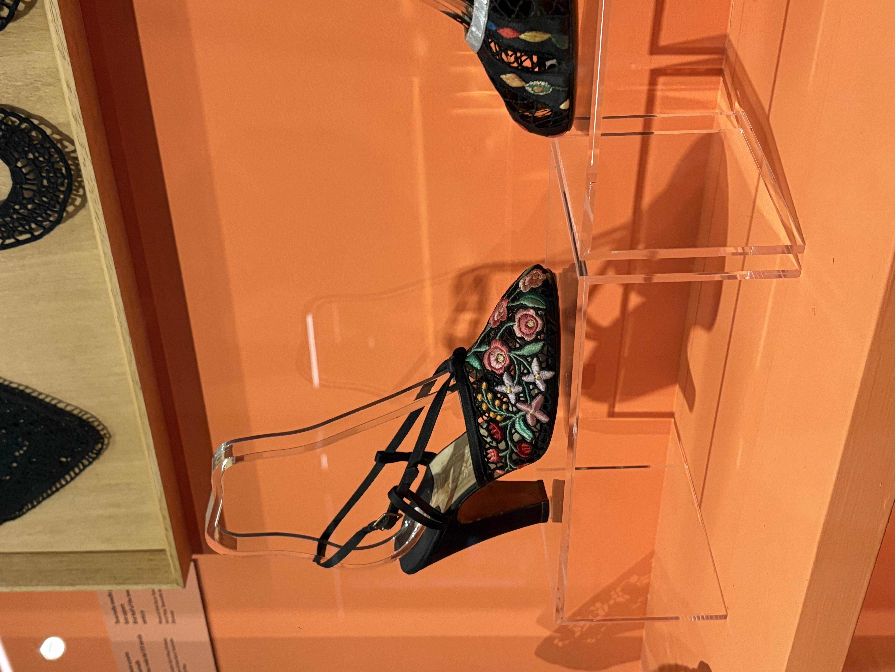
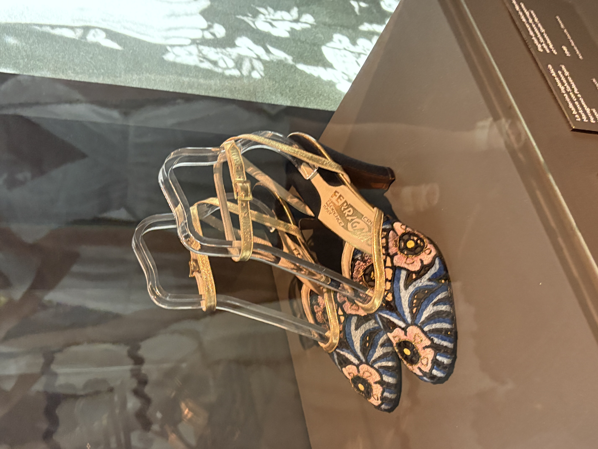
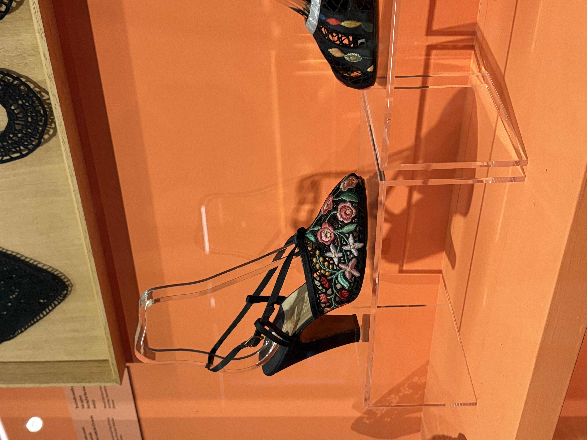
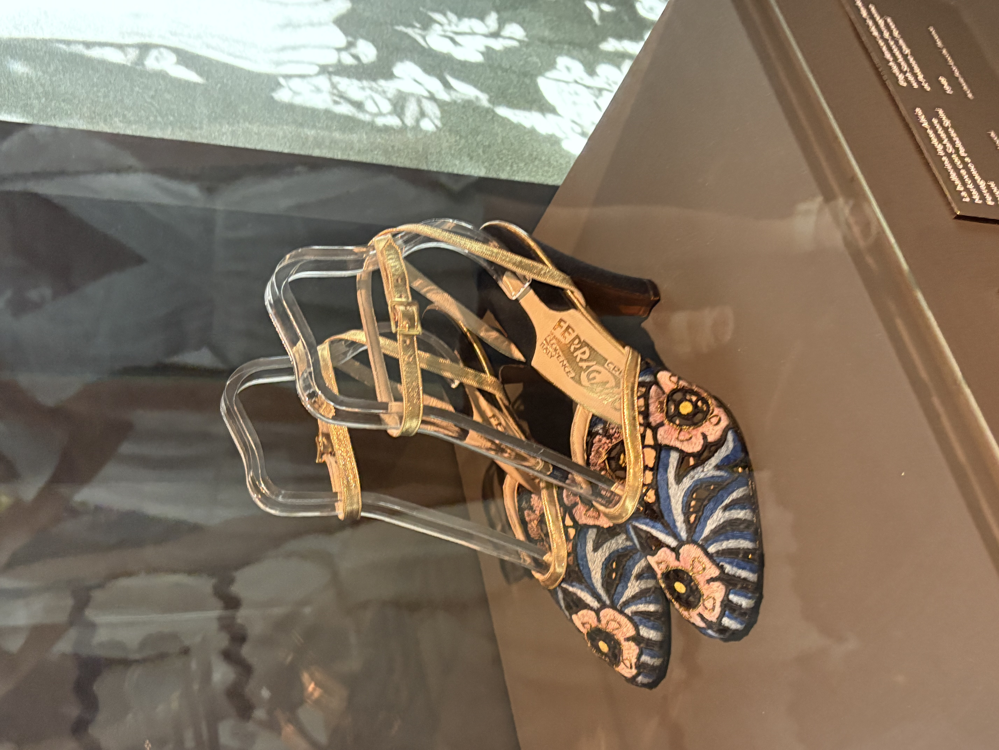